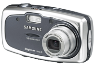
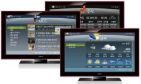

{kind=link}
{kind=link}

{kind=link}
{kind=link}


I am a Bachelor of computer engineering, finished in Hongik University.
My team(Hongik PCRC) got 12th rank in ACM ICPC(International Collegiate Programming Contest) ASIA Regional Contest, 2000. Here's the team list.
I finished 15-th (highest) class English language course in LCI (Language Connection International) Toronto, 2001.
I got 1st grade of SST (Samsung English Speaking Test). 2003
Of course, my strong field is in computer programming.
My favorite programming language is C/C++/Tcl/Scheme/Lisp and I prefer GNU/Linux system most.
I have experiences developing Xlib/GTK+, Windows/MFC, UNIX socket applications and libraries.
I'm very skillful at developing software using open source development tools such as Emacs, CVS, BitKeeper, GNU make, autoconf, m4, python, and so on.
I was a local C language lecturer of P.C.R.C. from 1997 to 2002. During that time, include C courses, I had several seminars about mixed language programming, writing robust code, Pentium/P-Pro/P-MMX/P-II architectures, and C++ STL.
I am an official Korean translator/maintainer of C Programming FAQs, the Usenet comp.lang.c FAQ, maintained by Steve Summit. It is available here.
These records are the summary of what I did for living. Note that these records are not the whole history. Due to the company policy, I'm not allowed to describe some of my job here. For the same reason, some names of projects and names of some libraries may not correct.
As a free-lancer, I developed Windows FTP server, SQL converter, and Text image generator in So Good Inc. 2000
I've participated MPV/MA, SMAT project in Samsung Electronics so far. My primary job is developing low-memory-consuming XML library and MPV parser. 2003-2004
I developed libsxml and have maintained it. libsxml is almost confirming DOM style XML processor -- it uses less memory than other XML processor such as expat or mini XML in storing XML tree structure. It supports XML namespace and entity declarations.
 I developed libmpv, which is MPV processor depends on libsxml. These two libraries are used in several Samsung cameras including U-CA5.
I had participated MASH/Shadow project in Samsung Electronics. My primary job is optimizing and refactoring the software so that it can run faster with less memory. 2005-03
I had participated SODI (Photo Player, SPL-07) project in Samsung Electronics:
I had participated CE2.0 project (2007) to develop Internet-connected TV. My job was to develop a generic RSS parser, an EPG parser, a file transfer utility, and Open API for TV.
I had joined the A-VSB standardization group in Samsung Electroncis, to help developing the standard document. (2007-06) Unfortunately, these are not my specialty, so that I'd little use of that group. (A-VSB is a modification of the 8VSB modulation system used for transmission of digital television using the ATSC system. -- Wikipedia)
(2007-2008), I have designed/written the OpenAPI specification for Power Infolink (Korean) server that interacts with some Samsung LCD HDTVs (750 series). (These TVs utilize Internet RSS service such as news, stock quote, YouTube and so on.)
2009, On InsenTV project (further utilization of the previous one,) I'd participated to implement advertisement engine of TV. And I developed several browser native plug-ins (such as Database plugin, screenshot plugin, etc.) for the Javascript developers.
2010, I joined UCX project. It was a frontier project to test feasability and discovering of cloud computing technology. I'd written 'Service Specification for Personal Cloud', that extends/utilizes XMPP. Based on that specification, I'd implemented extended XMPP service daemon. I implemented and enhanced XEP-0004, XEP-0050, XEP-0066; And most of device specific services are implemented on top of XEP-0050.
I have learned grid computing middleware, called ICE. I developed a distributed real-time video transcoder service for Internet TV, and developed device/file manager for various devices (e.g. TV, NAS, odroid/tablet, galaxy S), and developed virtual machine monitor.


The latest version is available at
here.
Copyright © 2004-2010
Seong-Kook Shin. All rights reserved.

$Id$